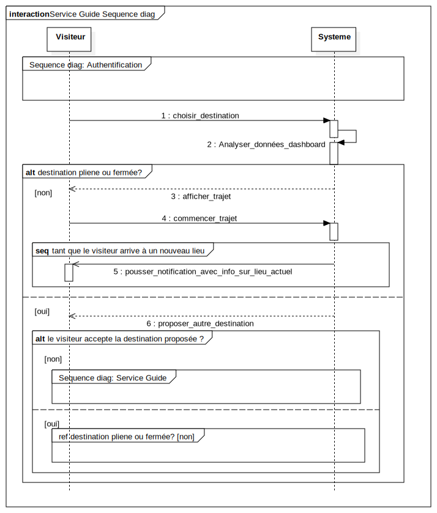

Interaction1
UMLInteraction
Smart Tourisme
::
Sequence diag: Service Guide
::
Interaction1
Description
none
Diagrams

Service Guide Sequence diag
Fragments
destination pliene ou fermée?
tant que le visiteur arrive à un nouveau lieu
le visiteur accepte la destination proposée ?
Participants
Visiteur
Systeme
Messages
choisir_destination (Visiteur→Systeme)
Analyser_données_dashboard (Systeme→Systeme)
afficher_trajet (Systeme→Visiteur)
commencer_trajet (Visiteur→Systeme)
pousser_notification_avec_info_sur_lieu_actuel (Systeme→Visiteur)
proposer_autre_destination (Systeme→Visiteur)
Properties
Name
Value
name
Interaction1
stereotype
null
visibility
public
isReentrant
true
Owned Elements
Service Guide Sequence diag